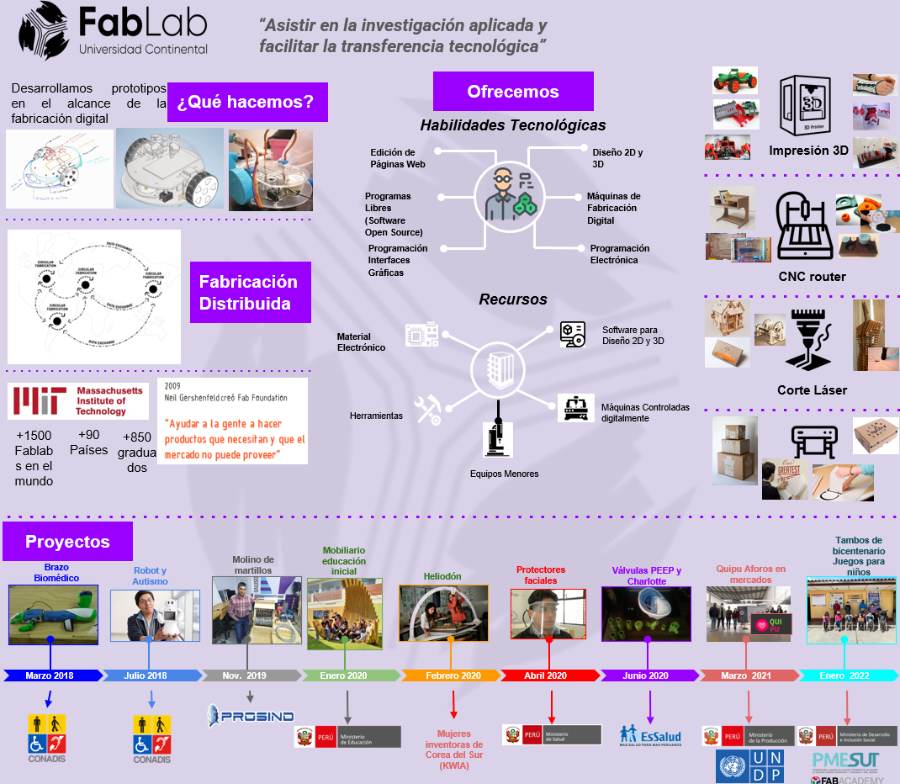
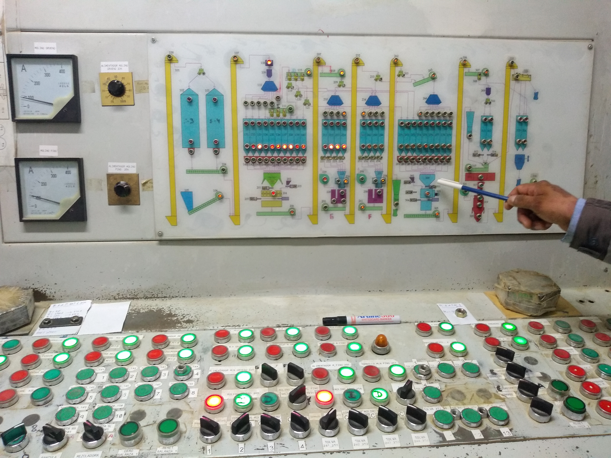
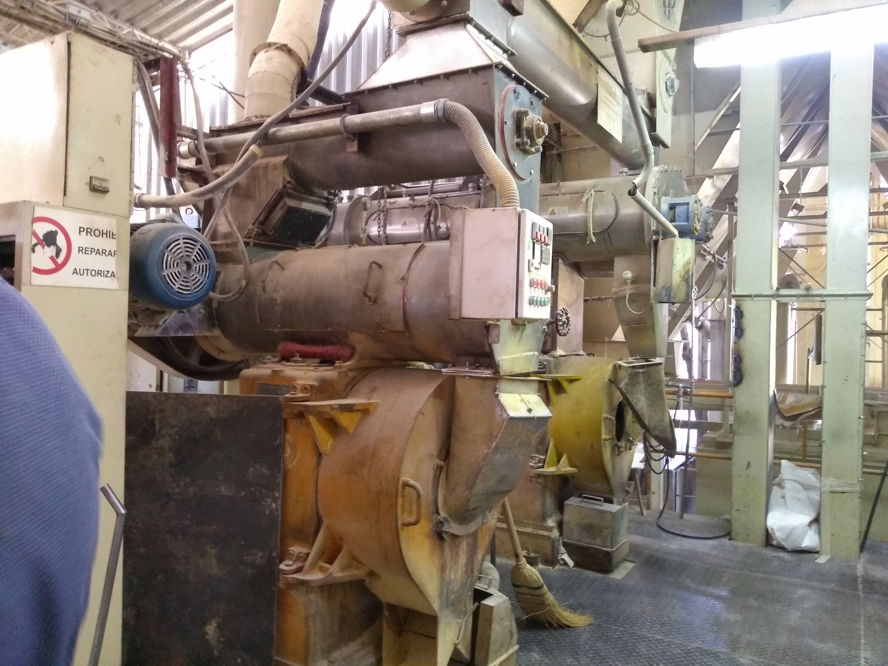
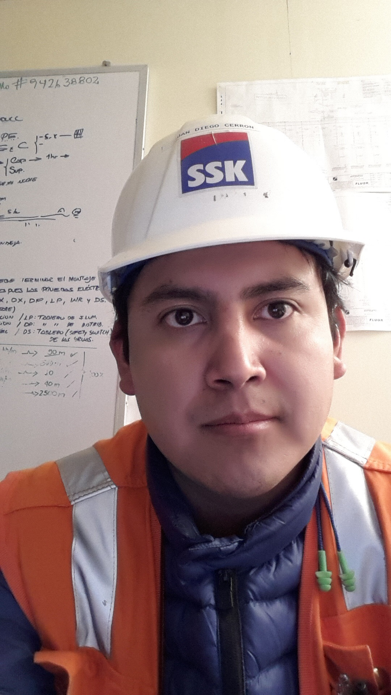

Juan Diego Cerrón Salcedo
Hola mi nombre es Juan Diego, tengo 34 años nací en Camaná, tengo interés en las tecnologías emergentes y disruptivas. Me gusta compartir mis conocimientos y es por ello que me gusta enseñar y he encontrado mi propósito como docente en educación superior contribuyendo con un enfoque STEM. El bootcamp FullStack me gusta y permite consolidar algunos conocimientos con los que puedo cerrar brechas tecnológicas que antes me era difícil superar.
Descargar Curriculum VitaeOcupación Actual (2019 al 2023)
Actualmente soy coordinador de laboratorios de fabricación digital de la Universidad Continental y desarrollo proyectos multidisciplinarios con el entorno conectando las 28 carreras profesionales con proyectos sociales en ecosistemas del MiDIS, PRODUCE, PNUD entre otros.
Actualmente estoy haciendo...
Proyectos Sociales:
- Transformación Digital en Mercados de Abastos (PNUD y PRODUCE)
- Gestores con Competencias Digitales - MiDIS TAMBOS PROGRAMA PAIS
- Identificación de emociones en aulas - Universidad Continental
- Implementación de Sistemas de Gestión Documentaria para ISO9001 - FABLAB-UC
- Instructor Fab Academy 2023 - PMESUT
- Impresión 3D Médicas (Diagnóstico por Imágenes)- ESSALUD
Trabajos Anteriores
Mantenimiento Alprosa (2011 al 2012)
Gestión de activos, monitoreo a condición, RCM de la planta de estrusión

Ampliación de Planta de Balanceado (2013 al 2014)
Generación de planos de montaje mecánico y puesta en marcha

Ampliación SMCV (2015)
Instrumentista de campo, planner, pruebas de comisionamiento

Docente de Electrónica y Automatización (2016 al 2018)
Instalaciones eléctricas, instrumentación, programación de PLC, HMI, SCADA, redes industriales y fabricación digital